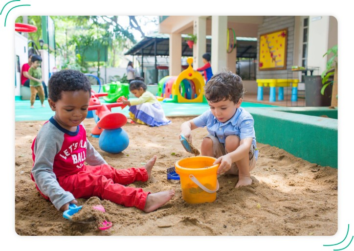
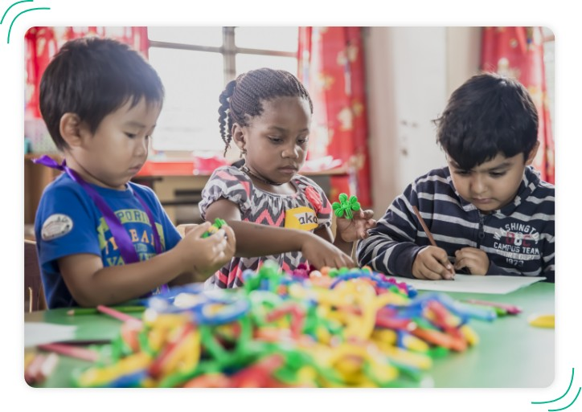

WHOLE EDUCATION
Indus is
one of the few schools that goes beyond academics, catering to students’
signature strengths. Here arts, crafts,
music, dance, drama and physical eduaction are given as much importance
as academics. The Leadership Curriculum,
unique to Indus, allows for students to set skill-based goals in several
areas. We believe that skill
development is absolutely essential to prepare students for life. All of
these aspects provide for Whole
Education. Through these features we aim to teach skills that would
prepare students for the VUCA (volatility,
uncertainty, complexity and ambiguity) world that lies ahead of them

At
Indus we believe that every child is altruistic and has the potential to
change the world, for the better.
We strongly emphasize the holistic development of a child. This journey
begins in the early years by nurturing
competencies and skills as listed below :
1) Tikkun Olam
Children don't simply observe the world, they also imagine how it could be
different, hence the concept of Tikkun Olam or heal the world, nurtures
empathy and also gives them a personal
vision. The vision is decided by the child and facilitated by teachers and
parents.
2) Deep Reading
Is an
approach that helps develop perspective thinking, builds character,
morals, and values; and also fosters moral
imagination. Reflecting on fictional or nonfictional stories, can be a
powerful force to get children to engage
with a character’s life and emotions, cultivating empathy.
3) Junk Yard Philosophy
Einstein said, "Imagination is more important than knowledge", because
imagination opens the door to creativity
and innovation. This can be achieved through the Israeli concept of a
Junkyard. When children play with each other
with junk, household items and scrap materials; they manipulate materials,
express themselves verbally and
non-verbally, plan, act, interact, react, and try different roles. This
encourages them to become independent
thinkers, risk takers, decision makers and also conflict resolvers.
4) Biophilia
With the advent of technology, students are spending most of the time
indoors and are experiencing a nature
deficit disorder. Reconnecting with nature (Biophilia) is another way to
foster empathy, a sense of
responsibility, resilience and also creativity. The benefits of connecting
with nature are immense - it fosters
their intellect though inquiry and experimentation - bringing out the
scientist in them.
The curriculum encourages children to ask questions, plan investigations,
explore various outcomes, and reach
logical conclusions, with teachers as facilitators. For older children
from ages 4 to 6 the curriculum has a
strong focus on conceptual learning and development of leadership skills.
Children engage in a transdisciplinary
curriculum that meets international benchmarks.

LEADERSHIP CURRICULUM
The
leadership curriculum at Indus focuses on self-actualization of
students, helping them value their talent to
ultimately unlock their potential. Knowledge acquired from the
classrooms to a large extent augments practical
understanding. The main agenda of the leadership curriculum is to
connect the children to society, to the
environment, and most importantly to themselves.
Leadership is experiential and
transformational. However, experiences are quite
meaningless unless one reflects on them and learns something from them.
Reflection is an art and a science. At
Indus school of leadership, during their annual leadership camp,
students are trained to reflect through
outbound activities.